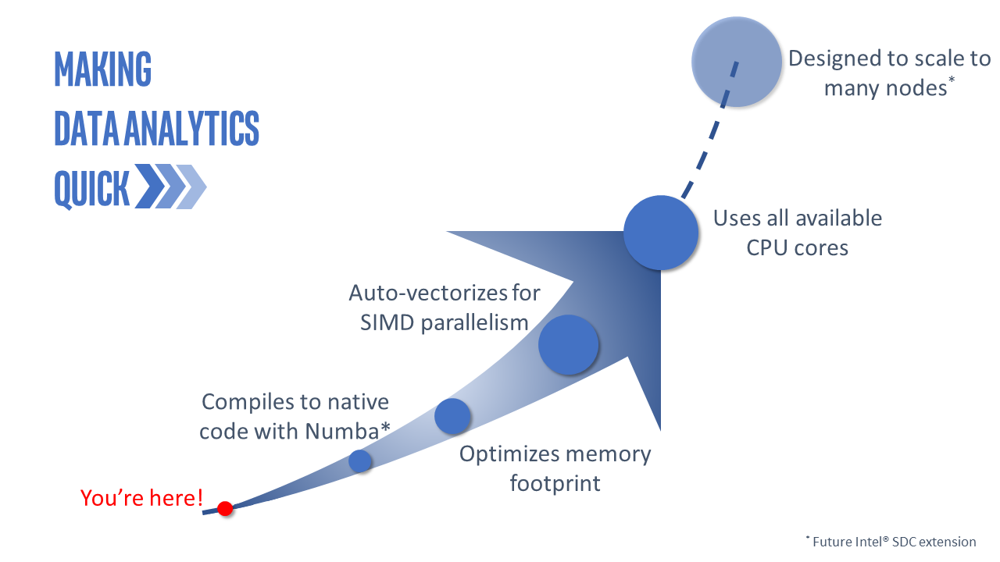

{kind=link}
This is Intel® Scalable Dataframe Compiler (Intel® SDC), which is an extension of Numba* that enables compilation of Pandas* operations. It automatically vectorizes and parallelizes the code by leveraging modern hardware instructions and by utilizing all available cores.
{kind=link}
User Manual¶
User Manual To-Do List¶
Todo
Add support of parameters center, win_type, on, axis and closed
Todo
Fix SDC behavior and add the expected output of the > python ./series_getitem.py to the docstring
Todo
Add support of parameters center, win_type, on, axis and closed
Todo
Add support of 32-bit Unicode for str.center()
Todo
Add support of matching the end of each string by a pattern
Add support of parameter
na
Todo
Add support of parameters start and end
Todo
Add support of 32-bit Unicode for str.ljust()
Todo
Add support of 32-bit Unicode for str.rjust()
Todo
Add support of matching the start of each string by a pattern
Add support of parameter
na
Todo
Add support of 32-bit Unicode for str.zfill()
Todo
Basic compilation controls. What can be compiled and what cannot. How to work around compilation issues. References to relevant discussion in Numba*. Specifics for Series, Dataframes, and other hpat specific data structures
Todo
Give an example here of unsupported Pandas* API that cannot be compiled as is, e.g. pd.read_excel
Todo
Give the list of recommendations how to work around such a situation, e.g. getting the function out of jitted region, compilation with nopython=False, using alternative APIs in Pandas* or NumPy*. Each alternative needs to be illustrated by a code snippet
Todo
Provide the link to the API Reference section with the list of supported APIs and arguments
Todo
Give examples with dictionaries or datetime, show how one type can be replaced with another
Todo
Discuss the workaround, show the modified code
Todo
Discuss the workaround, show the modified code Discuss other typical scenarios when Numba or hpat cannot perform type inference
Todo
Show example when Intel SDC can infer Nan in integer Series. Also show example where information about
NaN cannot be known at compile time and show how it can be worked around
Todo
Show example with reading file into dataframe when Intel SDC can do type inferencing at compile time
Todo
Show example how to manually specify the schema
Todo
Auto-generate the list of examples from respective docstrings in examples
Todo
Provide the link to GitHub repository, provide build instructions, provide the link to Developer’s Guide
Todo
Provide installation instructions for public packages on Anaconda.org and PyPI
Todo
- Provide a few code snapshots illustrating typical usages of Intel® SDC:
Reading a file
Working with a column - a few basic ops, e.g. aggregation or sorting + UDF
Working with a dataframe
Working with a machine learning library, e.g. scikit-learn, xgboost, daal
Each snapshot can have two flavors - serial and parallel to illustrate easiness of getting parallel performance.
Todo
Need to give basic information that hpat and numba do not support full set of Pandas and Numpy APIs, provide the link to the API Reference section for Intel® SDC, relevant reference to Numba documentation.
Todo
Short intro how to measure performance. Compilation time and run time. Illustrate by example. Reference to relevant discussion in Numba documentation
Todo
Short introduction why performance may be slower than expected. GIL, Object mode and nopython mode. Overheads related to boxing and unboxing Python objects. Reference to relevant sections of Intel® SDC and Numba documentation for detailed discussion
Todo
Provide step-by-step build instructions for Linux*, Windows*, and Mac*.
Todo
Links to other resources about Intel Python (examples, documentation, media, use cases, press)
Todo
Discuss high-level issues related to typical data analytics workflow, starting from I/O issues to dataframe processing to machine learning. Discuss each of these aspects on some examples.